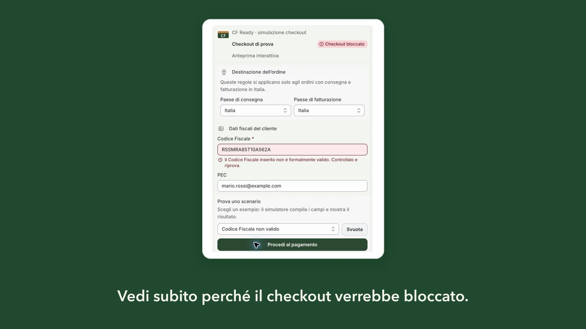

Cosa succede nel checkout
Il cliente inserisce un codice numerico di 11 cifre o un’omocodia nel campo Codice Fiscale del checkout italiano. Quando esce dal campo compare l’errore «Inserisci un Codice fiscale (facoltativo) valido» e il pulsante per completare l’ordine non procede. Nelle nostre prove nessun ordine è stato creato con un codice numerico.
Il controllo è di Shopify. Avviene anche con le regole di CF Ready disattivate e prima di qualsiasi app. Il testo del messaggio non si cambia dall’editor dei contenuti del checkout: lì si trova soltanto l’etichetta del campo. Anche con il campo facoltativo, un valore scritto in una di queste forme blocca l’ordine; un campo lasciato vuoto invece passa.
Quali Codici Fiscali sono coinvolti
- Codici numerici di 11 cifre. È il Codice Fiscale di società, associazioni ed enti, e la forma del codice provvisorio.
- Omocodie. Quando due persone avrebbero lo stesso codice, alcune cifre diventano lettere. Il codice resta valido, ma non segue più lo schema di lettere e cifre in posizioni fisse che il campo di Shopify si aspetta.
Sono codici reali e formalmente corretti. Il cliente che vede l’errore con uno di questi codici non ha sbagliato a scrivere.
Cosa abbiamo verificato
Le prove del 6 novembre 2026 su checkout reali, con la regola di CF Ready disattivata, mostrano un controllo sulla sola struttura: sei lettere, due cifre, una lettera, due cifre, una lettera, tre cifre e una lettera, senza distinguere maiuscole e spazi.
Con questa regola Shopify accetta anche codici ordinari con il carattere di controllo errato o con un mese inesistente. Rifiuta invece codici di 15 o 17 caratteri, codici con il prefisso IT, numerici e omocodie. Un nuovo controllo nello stesso giorno, nel checkout di uno store reale con CF Ready attiva, ha dato lo stesso esito sui numerici e su un’omocodia corretta.
Non abbiamo trovato annunci di Shopify su questo cambiamento. Lo abbiamo segnalato al supporto Shopify lo stesso giorno, con le prove raccolte. Non conosciamo la causa né i tempi di un’eventuale modifica.
Cosa fa CF Ready con codici numerici e omocodie
CF Ready continua a considerare validi i codici numerici e le omocodie con il carattere di controllo corretto. È una scelta voluta: la regola di Shopify non è documentata e può cambiare. Se CF Ready la copiasse, rifiuterebbe codici corretti anche nel giorno in cui Shopify tornasse ad accettarli.
CF Ready non può far accettare al campo di Shopify un valore che il campo rifiuta, perché quel controllo avviene prima e fuori dall’app. Per gli altri codici il lavoro resta lo stesso: CF Ready controlla data, codice catastale e carattere di controllo del Codice Fiscale, cioè gli errori che il campo di Shopify lascia passare.
Quando provi nel simulatore dell’app un valore valido per CF Ready ma rifiutato dal campo di Shopify, il risultato lo indica sul campo. Usa esempi sintetici, non i codici dei clienti.

Cosa può fare il merchant oggi
Parti da chi compra nel tuo store. Se vendi a società o enti, o se un cliente ti segnala l’errore, decidi con il commercialista come gestire questi casi.
- Con il Codice Fiscale obbligatorio nel checkout, chi ha soltanto un codice numerico o un’omocodia non può completare l’ordine. Con il campo facoltativo può lasciarlo vuoto.
- Se rientra nel tuo caso, indica al cliente un canale per comunicarti il Codice Fiscale dopo l’ordine, per esempio l’email dell’assistenza.
- Spiega il limite nelle pagine di assistenza o nelle FAQ dello store, così il cliente sa a chi rivolgersi.
Evita di chiedere il codice in “Interno” o in un altro campo dell’indirizzo: il dato finirebbe in un campo con un altro significato, come spiega la Guida sul Codice Fiscale in Indirizzo 2.
Cosa può fare il cliente
Il cliente può contattare il negozio e chiedere come comunicare il proprio codice. Non deve usare il codice di un’altra persona o un codice inventato per superare il controllo: il dato servirebbe al negozio per i suoi documenti e sarebbe sbagliato.
Domande frequenti
Il messaggio «Inserisci un Codice fiscale (facoltativo) valido» arriva da CF Ready?
No. «Inserisci un Codice fiscale (facoltativo) valido» è un messaggio di Shopify. Compare anche con le regole di CF Ready disattivate e non si modifica dall’editor dei contenuti del checkout.
Se disattivo CF Ready, il Codice Fiscale numerico passa?
No. Le prove del 6 novembre 2026 sono state fatte con la regola di CF Ready disattivata, e il campo di Shopify rifiutava comunque codici numerici e omocodie.
Quando Shopify tornerà ad accettare questi codici?
Non lo sappiamo. Il comportamento è stato segnalato al supporto Shopify, che finora non ha indicato causa o tempi. Aggiorneremo questa Guida quando cambierà qualcosa di verificabile.
Posso provare questi casi prima di attivare le regole?
Sì, nel simulatore dell’app con esempi sintetici. Con un codice numerico o un’omocodia formalmente validi, il risultato indica che CF Ready li accetta e che il campo di Shopify oggi li rifiuta.